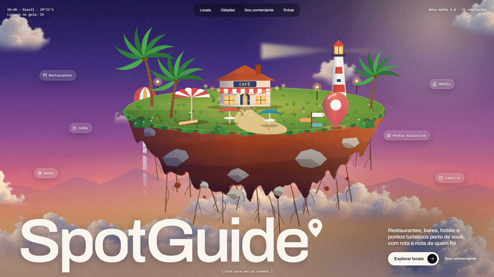
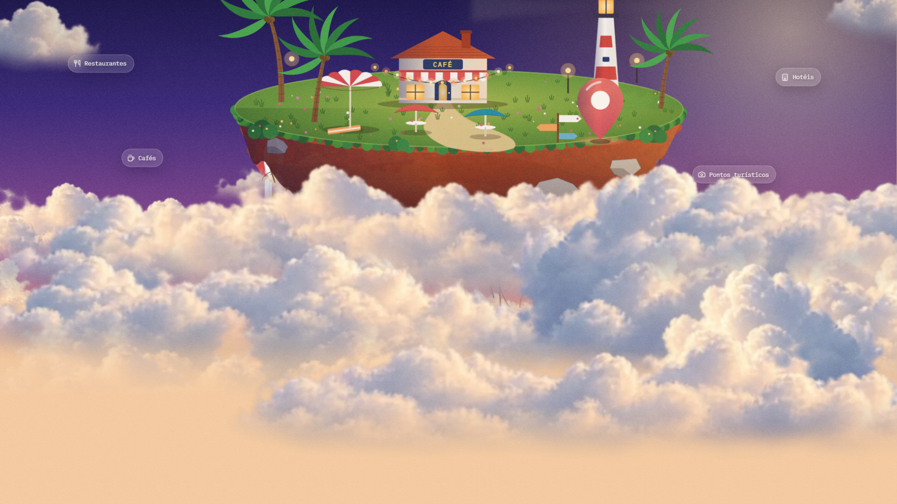
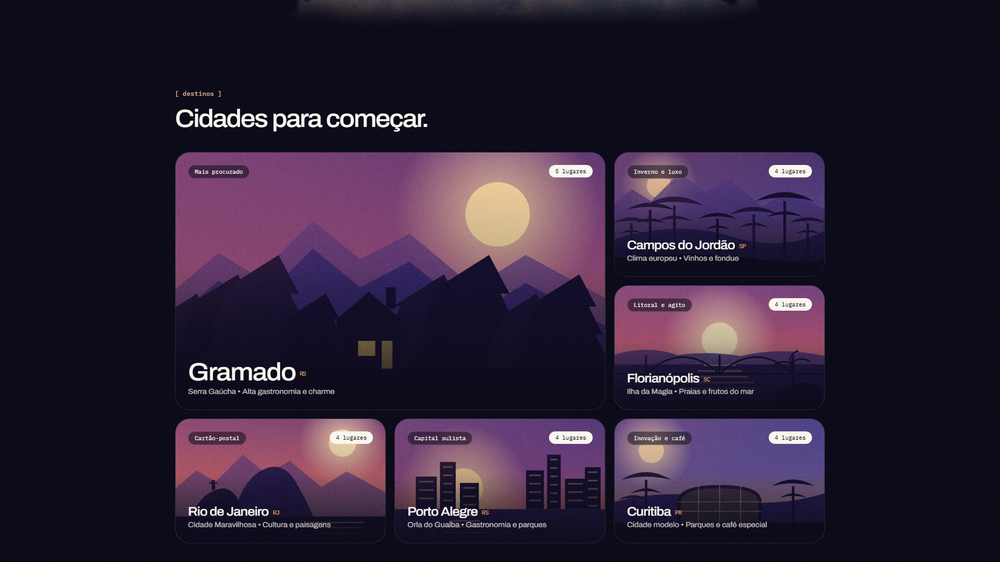
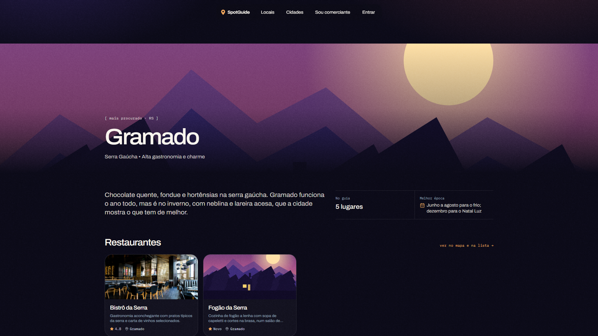
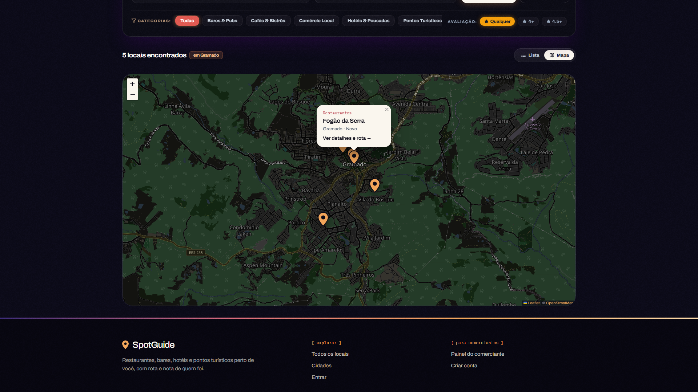
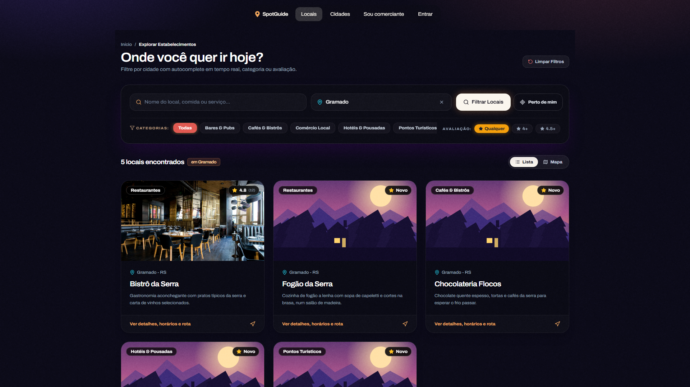
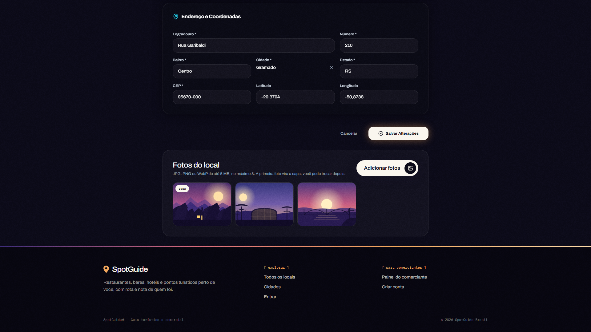

[ guia turístico e comercial ]
E se o guia turístico
fosse uma ilha?

[ hero ]
Uma ilha
só do SpotGuide
[ ao rolar ]
A câmera entra nas nuvens
[ destinos ]
6 cidades. 25 lugares no guia.
[ gramado ]
Página própria por cidade
Perto de mim · 25 km

[ catálogo ]
Filtro por categoria e nota
[ comerciante ]
Envia as fotos. A primeira vira capa.25lugares no guia
6cidades com página própria
mapa · fotos · SEOtudo no ar
Restaurantes, bares, hotéis e pontos turísticos perto de você, com rota e nota de quem foi.